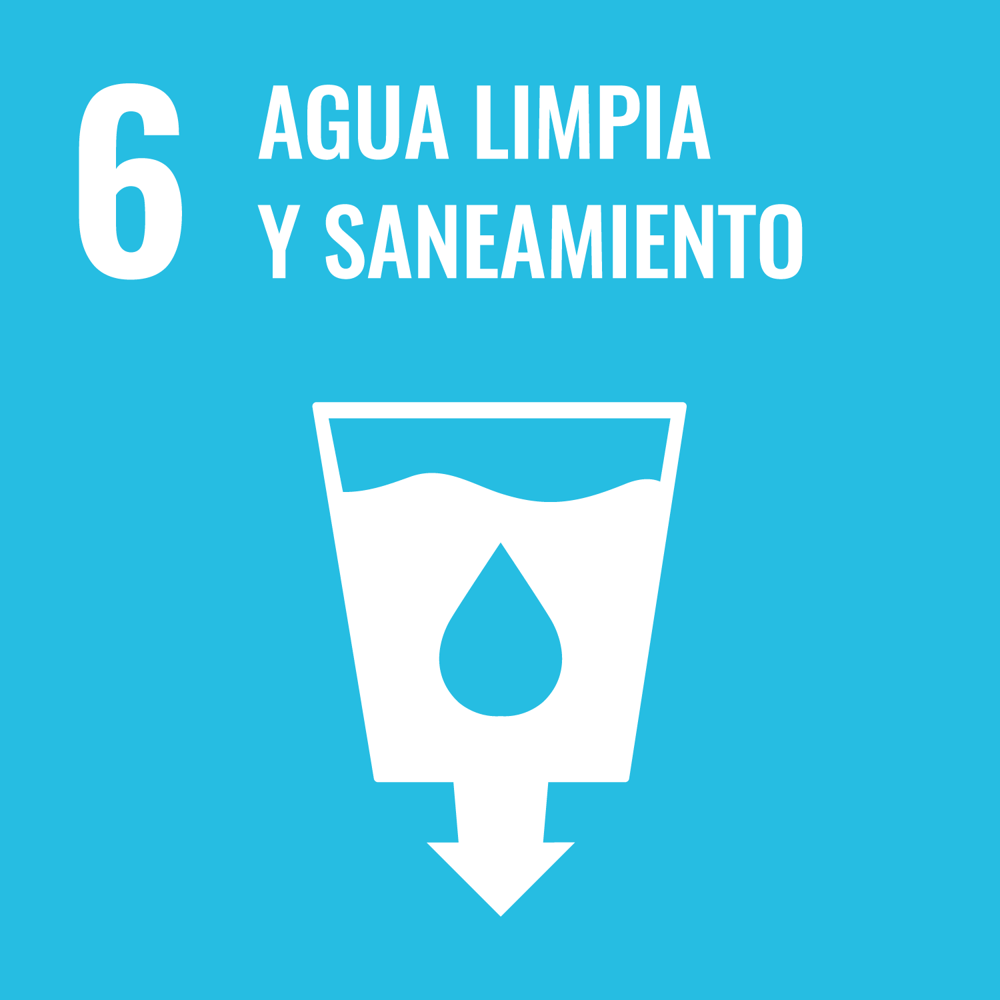
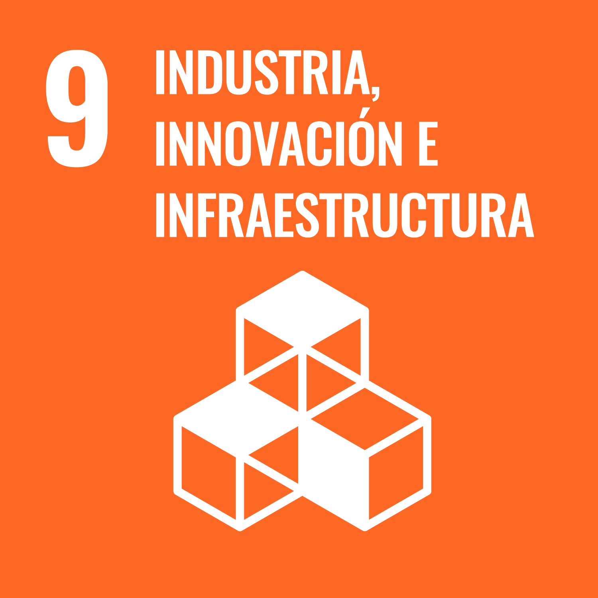
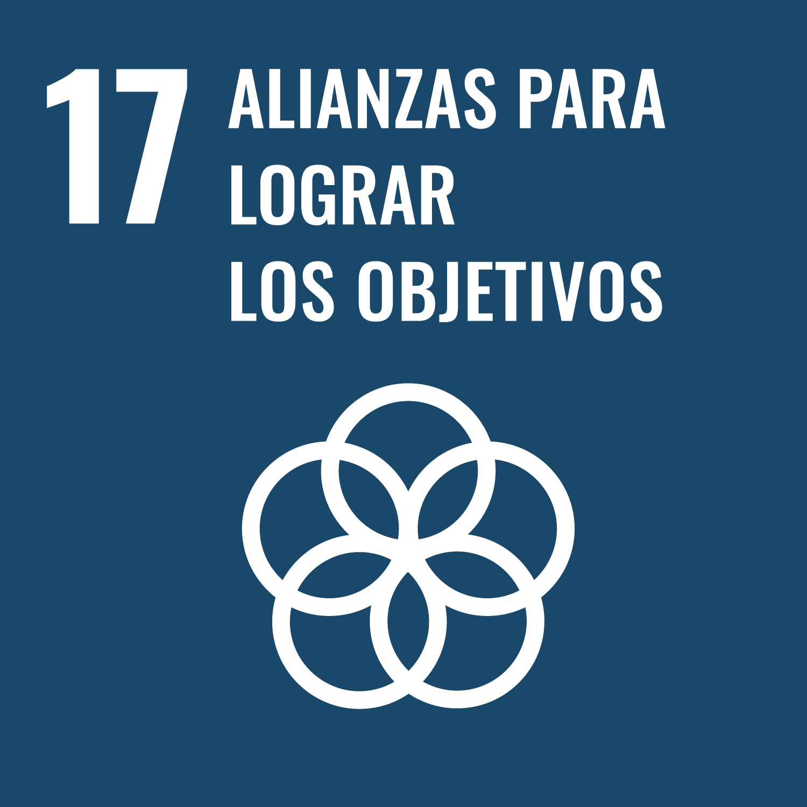

Sostenibilidad y desarrollo responsable en el entorno productivo
Índice
Sostenibilidad
"Cita"
La Tierra no es una herencia de nuestros padres, si no un préstamo de nuestros hijos.
proverbio
El concepto de sostenibilidad surge como respuesta respuesta a los problemas derivados de un modelo de desarrollo económico acelerado, centrado en el crecimiento sin tener en cuenta sus consecuencias para el planeta. En 1972, el Club de Roma publica el informe Los límites del crecimiento, alertando sobre el impacto del crecimiento económico desmedido en los recursos naturales y el medioambiente.
Ese mismo año, la Conferencia de Estocolmo, primera cumbre de la ONU sobre medioambiente, reconoce el impacto de la actividad humana en los ecosistemas y marca un punto de partida en la agenda ambiental global.
En 1987, el Informe Brundtland introduce oficialmente el concepto de desarrollo sostenible, definido como:
Aquel desarrollo que satisface las necesidades del presente sin comprometer la capacidad de las futuras generaciones para satisfacer las suyas.
En el contexto del sistema productivo, la sostenibilidad implica que las empresas y organizaciones desarrollen su actividad económica generando valor no solo económico, sino también ambiental y social. Esto significa producir de manera eficiente y responsable, reduciendo el impacto ambiental, respetando los derechos laborales y fomentando prácticas de gobernanza ética.
Acciones clave para integrar la sostenibilidad en el entorno productivo
| Práctica | Descripción |
|---|---|
| Eficiencia energética | Reducir el consumo de energía optimizando el uso de equipos, instalaciones y procesos. |
| Gestión de recursos naturales | Utilizar materias primas, agua y energía de forma responsable, evitando el desperdicio. |
| Diseño ecoeficiente | Diseñar productos o servicios que generen menos residuos y consuman menos recursos. |
| Cadena de suministro sostenible | Colaborar con proveedores que respeten criterios ambientales, sociales y éticos. |
| Innovación tecnológica | Aplicar tecnologías que mejoren la eficiencia y reduzcan el impacto ambiental. |
| Responsabilidad social corporativa (RSC) | Integrar acciones sociales y medioambientales en la estrategia de la empresa. |
| Transparencia y rendición de cuentas | Informar de forma clara sobre las prácticas y resultados en sostenibilidad. |
Marco internacional asociado al desarrollo sostenible
Un marco internacional del desarrollo sostenible es un conjunto de acuerdos, estrategias, normas y compromisos promovidos por organismos internacionales que establecen directrices comunes para orientar las políticas públicas, la actuación empresarial y la cooperación global hacia un modelo de desarrollo equilibrado en lo económico, social y ambiental.
Estos marcos sirven como referencia para que gobiernos, organizaciones y empresas adopten prácticas sostenibles y contribuyan a enfrentar desafíos globales como el cambio climático, la pobreza o la desigualdad.
Evolución de los marcos internacionales del desarrollo sostenible
| Año | Marco | Descripción |
|---|---|---|
| 1972 | Declaración de Estocolmo | Primera conferencia mundial sobre medioambiente; establece principios para la gestión ambiental a escala global. |
| 1987 | Informe Brundtland | Introduce el término “desarrollo sostenible” y destaca la necesidad de integrar economía, sociedad y medioambiente. |
| 1992 | Cumbre de Río (Cumbre de la Tierra) | Se lanza la Agenda 21 y convenios clave para promover un desarrollo sostenible a largo plazo. |
| 1997 | Protocolo de Kioto | Acuerdo vinculante que fija objetivos de reducción de emisiones de gases de efecto invernadero para países desarrollados. |
| 2000 | Objetivos de Desarrollo del Milenio | Ocho objetivos globales para reducir la pobreza extrema, mejorar la educación y la salud, entre otros. |
| 2015 | Objetivos de Desarrollo Sostenible (ODS) – Agenda 2030 | Sustituyen a los ODM y establecen 17 objetivos interconectados que integran las dimensiones económica, social y ambiental, recogidos en la Agenda 2030 de Naciones Unidas. |
| 2015 | Acuerdo de París | Compromiso internacional para limitar el calentamiento global por debajo de 2 °C y reducir emisiones de GEI. |
| 2015 | Agenda de Addis Abeba | Acuerdo sobre financiación para el desarrollo sostenible, centrado en la inversión responsable y cooperación internacional. |
Asuntos ambientales, sociales y de gobernanza (ASG)
Los Asuntos Ambientales, Sociales y de Gobernanza, abreviados como ASG (o ESG en inglés: Environmental, Social and Governance) hacen referencia a los tres grandes ámbitos que se analizan hoy en día para medir el compromiso de una empresa con la sostenibilidad.
Integrar los aspectos ASG en la estrategia de una organización permite evaluar su impacto no solo económico, sino también ambiental, social y ético. Además, cada vez más inversores, clientes y trabajadores tienen en cuenta estos criterios a la hora de elegir en qué empresas confiar, trabajar o colaborar.
A – Asuntos Ambientales
Se refieren al impacto que la actividad de una empresa tiene sobre el medioambiente. Esto incluye desde el uso de recursos naturales hasta las emisiones o residuos generados.
Ejemplos:
- Eficiencia energética en centros de datos y servidores.
- Reducción del consumo eléctrico en dispositivos y redes.
- Minimizar la huella de carbono del software (eco-diseño, código optimizado).
- Uso de energías renovables en infraestructuras tecnológicas.
- Reciclaje y correcta gestión de residuos electrónicos (RAEE).
S – Asuntos Sociales
Engloban todo lo relacionado con las personas: trabajadores, clientes, proveedores y la comunidad. Evalúa cómo la empresa contribuye al bienestar social.
Ejemplos:
- Promoción de la diversidad y la inclusión en equipos técnicos.
- Garantizar condiciones laborales dignas en todas las fases de producción (especialmente en hardware).
- Protección de datos personales y privacidad de usuarios.
- Accesibilidad digital: diseñar software y webs accesibles para personas con discapacidad.
- Uso responsable de la inteligencia artificial o algoritmos (evitar sesgos).
G – Gobernanza
Se refiere a cómo se gestiona y organiza una empresa, sus valores éticos, la toma de decisiones y el cumplimiento normativo. Una buena gobernanza genera confianza.
Ejemplos:
- Políticas de ciberseguridad y protección de la información.
- Transparencia en el uso de datos y algoritmos.
- Cumplimiento de reglamentos como el RGPD (Reglamento General de Protección de Datos).
- Toma de decisiones basada en principios éticos y no solo en beneficios económicos.
- Existencia de canales internos para denunciar malas prácticas.
ODS y Agenda 2030.
Los Objetivos de Desarrollo Sostenible (ODS) son un conjunto de 17 metas globales adoptadas por todos los Estados miembros de la ONU en el año 2015. Tienen como objetivo lograr un desarrollo sostenible que integre el crecimiento económico, la inclusión social y la protección del medioambiente, sin dejar a nadie atrás. Cada objetivo incluye metas específicas que deben alcanzarse antes del año 2030.
Los 17 Objetivos de Desarrollo Sostenible
"ODS 1. Fin de la pobreza"
 Erradicar la pobreza en todas sus formas como base para un desarrollo económico y social sostenible. [Más informacion]
Erradicar la pobreza en todas sus formas como base para un desarrollo económico y social sostenible. [Más informacion]
"ODS 2. Hambre cero"
 Acabar con el hambre, garantizar una alimentación adecuada y promover una agricultura sostenible.
Acabar con el hambre, garantizar una alimentación adecuada y promover una agricultura sostenible.
"ODS 3. Salud y bienestar"
 Garantizar una vida saludable y promover el bienestar físico y mental en todas las edades.
Garantizar una vida saludable y promover el bienestar físico y mental en todas las edades.
"ODS 4. Educación de calidad"
 Asegurar una educación inclusiva, equitativa y de calidad, y fomentar el aprendizaje a lo largo de la vida.
Asegurar una educación inclusiva, equitativa y de calidad, y fomentar el aprendizaje a lo largo de la vida.
"ODS 5. Igualdad de género"
 Lograr la igualdad de género y empoderar a mujeres y niñas en todos los ámbitos.
Lograr la igualdad de género y empoderar a mujeres y niñas en todos los ámbitos.
"ODS 6. Agua limpia y saneamiento"
 Garantizar la disponibilidad y gestión sostenible del agua y el saneamiento."ODS 7. Energía asequible y no contaminante"
 Asegurar el acceso a una energía asequible, segura, sostenible y moderna para todos.
Asegurar el acceso a una energía asequible, segura, sostenible y moderna para todos.
"ODS 8. Trabajo decente y crecimiento económico"
 Promover el crecimiento económico sostenido y el empleo decente, especialmente en sectores emergentes.
Promover el crecimiento económico sostenido y el empleo decente, especialmente en sectores emergentes.
"ODS 9. Industria, innovación e infraestructura"
 Desarrollar infraestructuras resilientes, fomentar la innovación y promover una industrialización sostenible."ODS 10. Reducción de las desigualdades"
 Reducir las desigualdades económicas, sociales y de acceso dentro y entre países.
Reducir las desigualdades económicas, sociales y de acceso dentro y entre países.
"ODS 11. Ciudades y comunidades sostenibles"
 Lograr ciudades inclusivas, seguras, resilientes y sostenibles, con acceso equitativo a servicios básicos.
Lograr ciudades inclusivas, seguras, resilientes y sostenibles, con acceso equitativo a servicios básicos.
"ODS 12. Producción y consumo responsables"
 Impulsar patrones sostenibles de producción y consumo a lo largo de toda la cadena de valor.
Impulsar patrones sostenibles de producción y consumo a lo largo de toda la cadena de valor.
"ODS 13. Acción por el clima"
 Adoptar medidas urgentes contra el cambio climático y sus impactos.
Adoptar medidas urgentes contra el cambio climático y sus impactos.
"ODS 14. Vida submarina"
 Conservar y utilizar de forma sostenible los océanos y recursos marinos.
Conservar y utilizar de forma sostenible los océanos y recursos marinos.
"ODS 15. Vida de ecosistemas terrestres"
 Proteger, restaurar y promover el uso sostenible de los ecosistemas terrestres.
Proteger, restaurar y promover el uso sostenible de los ecosistemas terrestres.
"ODS 16. Paz, justicia e instituciones sólidas"
 Promover sociedades justas, pacíficas e inclusivas y garantizar el acceso a la justicia.
Promover sociedades justas, pacíficas e inclusivas y garantizar el acceso a la justicia.
"ODS 17. Alianzas para lograr los objetivos"
 Fortalecer alianzas globales para lograr los ODS mediante cooperación, intercambio de conocimientos y recursos.Indra, un ejemplo de empresa tecnolológica comprometida con los ODS
ODS y Agenda 2030
La [Agenda 2030 para el Desarrollo Sostenible] (https://unctad.org/system/files/official-document/ares70d1_es.pdf) es el marco internacional que agrupa los 17 ODS. Es una hoja de ruta global impulsada por la ONU para avanzar hacia un modelo más justo, sostenible y equilibrado a nivel mundial. Cada país, región y sector productivo debe adaptarla a su contexto. En el ámbito tecnológico, esto implica aplicar los ODS al desarrollo de soluciones digitales, infraestructuras sostenibles, igualdad de acceso a la tecnología, ciberseguridad, etc.
¿Por qué son importantes los ODS para las empresas?
Las empresas tienen un papel fundamental en la consecución de los ODS. Aplicarlos les permite:
- Contribuir a una sociedad más justa y sostenible.
- Mejorar su imagen y reputación ante clientes, inversores y administraciones.
- Detectar nuevas oportunidades de innovación y de negocio responsable.
- Gestionar mejor los riesgos sociales, ambientales y éticos.
- Acceder a financiación sostenible o ayudas públicas vinculadas a sostenibilidad.
ODS en el sector tecnológico
A continuación, se presentan algunos ejemplos de cómo las empresas del sector tecnológico pueden contribuir a los Objetivos de Desarrollo Sostenible (ODS) .
| ODS | Aplicación |
|---|---|
| ODS 7: Energía asequible y no contaminante | Optimización del consumo energético en centros de datos y dispositivos. |
| ODS 9: Industria, innovación e infraestructura | Desarrollo de tecnologías sostenibles e infraestructuras digitales seguras. |
| ODS 12: Producción y consumo responsables | Reducción de residuos electrónicos y diseño de software eficiente. |
| ODS 13: Acción por el clima | Minimizar la huella de carbono de servicios digitales. |
| ODS 16: Paz, justicia e instituciones sólidas | Protección de datos, privacidad y ciberseguridad como base de la confianza digital. |
Oportunidades y desafíos del sector tecnológico.
Según el informe Empresas españolas y ODS: oportunidades y desafíos elaborado por la Red Española del Pacto Mundial, el sector tecnológico juega un papel esencial en la consecución de los Objetivos de Desarrollo Sostenible, especialmente en áreas como la innovación (ODS 9), el acceso a la información (ODS 16), la eficiencia energética (ODS 7) y la educación de calidad (ODS 4).
Sin embargo, también señala desafíos pendientes: mejorar la diversidad en los equipos (ODS 5), garantizar condiciones laborales justas en toda la cadena de suministro (ODS 8) y avanzar en prácticas de gobernanza más transparentes (ODS 16). Estos retos muestran la necesidad de que las empresas TIC no solo desarrollen tecnología útil, sino que lo hagan desde una perspectiva ética, inclusiva y sostenible.
Riesgos y oportunidades ASG para las empresas
Las dimensiones ASG (Ambientales, Sociales y de Gobernanza) no solo sirven para evaluar el grado de compromiso de una empresa con la sostenibilidad, también se han convertido en un factor estratégico que puede generar riesgos o nuevas oportunidades, según cómo se gestionen, que influye directamente en su presente y futuro.
Oportunidades ASG para las empresas
Una gestión adecuada de los aspectos ASG puede generar beneficios tangibles:
- La innovación verde permite desarrollar soluciones tecnológicas que minimizan el impacto ambiental reduciendo costes a medio y largo plazo.
- El buen desempeño en criterios ASG facilita el acceso a financiación sostenible por parte de inversores responsables.
- La sostenibilidad contribuye a fidelizar clientes y atraer talento comprometido.
- Aplicar criterios ASG ofrece una ventaja competitiva al facilitar el cumplimiento normativo y la entrada en nuevos mercados.
- Integrar los ODS en la estrategia empresarial abre oportunidades de negocio alineadas con el desarrollo sostenible.
Aplicación de las oportunidades ASG en empresas TIC y de desarrollo de software
El sector tecnológico tiene un gran potencial para contribuir al desarrollo sostenible a través de soluciones digitales. Estas son algunas formas concretas de aplicar los criterios ASG en este ámbito:
- Desarrollo de herramientas que apoyen la eficiencia energética (por ejemplo, software de gestión energética).
- Plataformas que mejoren la transparencia o trazabilidad en cadenas de suministro.
- Aplicaciones que fomenten la inclusión digital o accesibilidad.
Riesgos asociados a una mala gestión ASG
Ignorar o gestionar mal los criterios ASG puede suponer serios problemas:
- Sanciones legales por incumplimiento normativo. Un ejemplo claro es la Ley 11/2018 que obliga a determinadas empresas a identificar los aspectos ASG más relevantes, informar sobre sus impactos, riesgos y medidas adoptadas, y explicar cómo afectan a sus grupos de interés. No cumplir con esta ley puede derivar en sanciones económicas.
- Pérdida de reputación ante clientes, medios o redes sociales.
- Fuga de talento al preferir los profesionales más cualificados trabajar en empresas sostenibles y éticas.
- Falta de acceso a inversiones o contratos públicos que exigen criterios ASG.
- Costes a largo plazo por daños ambientales, conflictos laborales o mala gobernanza.
Grupos de interés (stakeholders)
Una buena gestión ASG no solo genera beneficios, también reduce riesgos importantes para la organización. Estos riesgos y oportunidades no existen en abstracto: están estrechamente vinculados a las expectativas de los grupos de interés (stakeholders), es decir, de todas las personas u organizaciones que se ven afectadas por la actividad de la empresa, o que influyen en ella.
Ejemplos:
- Clientes y usuarios
- Empleados y sindicatos
- Proveedores
- Inversores y accionistas
- Administraciones públicas
- Comunidad local
- Medios de comunicación
Identificar sus expectativas permite a las empresas priorizar los aspectos ASG más relevantes y orientar mejor sus decisiones estratégicas.
Evaluación de la sostenibilidad: estándares, métricas y marco legal
La evaluación de la sostenibilidad implica recopilar y analizar datos relacionados con el impacto ambiental, social y ético de la empresa. Su objetivo es identificar áreas de mejora, garantizar la rendición de cuentas y facilitar la toma de decisiones alineadas con los principios del desarrollo sostenible.
Para que esta evaluación sea efectiva, las organizaciones deben apoyarse en estándares reconocidos, utilizar métricas fiables y cumplir con un marco legal cada vez más exigente en materia de sostenibilidad y transparencia.
Estándares
Principales estándares que proporcionan marcos comunes para evaluar y gestionar la sostenibilidad:
- ISO 14001: gestión ambiental.
- ISO 26000: responsabilidad social.
- ISO 50001: eficiencia energética.
- ESRS (Estándares Europeos de Información sobre Sostenibilidad): normas obligatorias en la UE para informar sobre aspectos ASG, incluidas en la nueva Directiva de Informes de Sostenibilidad Corporativa.
Métricas
Las métricas permiten cuantificar y comparar el desempeño sostenible de una organización:
- Consumo de energía y agua.
- Emisiones de CO₂.
- Porcentaje de residuos reciclados.
- Diversidad e igualdad de género en la plantilla.
- Cumplimiento de objetivos ASG.
- Indicadores que permiten medir cómo contribuye la empresa al cumplimiento de los ODS, como la reducción de emisiones, la igualdad de género o el uso eficiente de recursos.
Marco legal
Las empresas deben rendir cuentas mediante normativas específicas que regulan la sostenibilidad:
- Ley 11/2018: obliga a informar sobre aspectos no financieros como el medioambiente, el personal, los derechos humanos y la ética empresarial.
- RD 1514/2007: Plan General de Contabilidad, adaptado para incluir criterios ASG.
- Ley 7/2021: cambio climático y transición energética.
- Ley 2/2011: economía sostenible.
- Directiva europea sobre diligencia debida en sostenibilidad: exige a las grandes empresas prevenir y mitigar impactos negativos sobre derechos humanos y medioambiente.
- Código de Derecho de la Sostenibilidad: recopilación oficial de normas relacionadas con la sostenibilidad.
- Web del Ministerio para la Transición Ecológica y el Reto Demográfico: fuente oficial para consultar legislación, ayudas y guías técnicas sobre sostenibilidad.
Inversión socialmente responsable e impulso de la sostenibilidad
La inversión socialmente responsable (ISR) consiste en destinar capital a empresas o proyectos que, además de ser rentables, cumplen criterios ASG.
La ISR actúa como un incentivo: si las empresas quieren atraer inversión, deben mejorar sus prácticas sostenibles. Esto genera un círculo positivo: más inversión para empresas responsables → más impacto positivo en el entorno.
Índices de sostenibilidad
Los índices de sostenibilidad son herramientas que clasifican y evalúan a empresas en función de sus prácticas responsables. Existen varios en el contexto europeo y español:
- FTSE4 Good Europe Index: incluye a empresas europeas que cumplen con altos estándares ASG. Indra estaría incluida en este índice.
- MSCI Europe ESG Leaders Index: agrupa empresas líderes en sostenibilidad dentro del mercado europeo.
- IBEX ESG: incluye empresas del IBEX 35 comprometidas con la transparencia y la responsabilidad social y ambiental. Telefónica se incluyen en este índice.
Impulso de la sostenibilidad
La inversión socialmente responsable dirige capital hacia empresas que cumplen criterios ASG. En este proceso, analistas y agencias especializadas evalúan el desempeño sostenible de las compañías, y sus informes sirven de guía para inversores que buscan rentabilidad con impacto positivo. Los índices de sostenibilidad ayudan a identificar a las empresas más comprometidas, fomentando la transparencia y el cambio hacia modelos empresariales más responsables.
Para saber más
Vídeos
- El Boom III: el camino de la sostenibilidad: refleja, mediante los testimonios de 29 empresas y organizaciones, cuál es el momento actual de la empresa española en materia de sostenibilidad.
Recursos web
- La IA podría ayudar a combatir el cambio climático
- ¿Cuál es el impacto ambiental de la inteligencia artificial?: La inteligencia artificial posee un impacto ambiental mucho más grande de lo que se piensa, y esto es algo que se debe tener presente.
- Iberdrola, comprometidos con los ODS:el Grupo Iberdrola incorpora a su estrategia empresarial, sistema de gobernanza y sostenibilidad los ODS.
- La Guía de los vagos para salvar el mundo: iniciativa de ONU que pretende apelar a la conciencia individual de cada persona.
Referencias
- Club de Roma. (1972). Los límites del crecimiento. https://es.wikipedia.org/wiki/Los_límites_del_crecimiento
- Comisión Mundial sobre el Medio Ambiente y el Desarrollo. (1987). Informe Brundtland. https://es.wikipedia.org/wiki/Informe_Brundtland
- Naciones Unidas. (1972). Declaración de Estocolmo sobre el Medio Humano. https://www.un.org/es/conferences/environment/stockholm1972
- Naciones Unidas. (1992). Conferencia de las Naciones Unidas sobre el Medio Ambiente y el Desarrollo. https://www.un.org/es/conferences/environment/rio1992
- Ministerio para la Transición Ecológica y el Reto Demográfico. (s.f.). Protocolo de Kioto. https://www.miteco.gob.es/es/cambio-climatico/temas/el-proceso-internacional-de-lucha-contra-el-cambio-climatico/naciones-unidas/protocolo-kioto.html
- Naciones Unidas. (2000). Objetivos de Desarrollo del Milenio. https://www.un.org/es/conferences/environment/newyork2000
- Naciones Unidas. (2015). Objetivos de Desarrollo Sostenible (ODS). https://www.un.org/es/conferences/environment/newyork2015
- UNCTAD. (2015). Agenda 2030 para el Desarrollo Sostenible. https://unctad.org/system/files/official-document/ares70d1_es.pdf
- UNFCCC. (2015). Acuerdo de París. https://unfccc.int/es/acerca-de-las-ndc/el-acuerdo-de-paris
- UNCTAD. (2015). Agenda de Acción de Addis Abeba. https://unctad.org/system/files/official-document/ares69d313_es.pdf
- Naciones Unidas. (s.f.). Objetivos de Desarrollo Sostenible (ODS). https://www.un.org/sustainabledevelopment/es/objetivos-de-desarrollo-sostenible/
- Pacto Mundial Red Española. (2017). Empresas españolas y ODS: oportunidades y desafíos. https://www.pactomundial.org/wp-content/uploads/2017/04/Empresas_y_ODS_PM_20170405.pdf
- Boletín Oficial del Estado. (2018). Ley 11/2018, de 28 de diciembre, sobre información no financiera y diversidad. https://www.boe.es/buscar/doc.php?id=BOE-A-2018-17989
- Boletín Oficial del Estado. (2007). RD 1514/2007, Plan General de Contabilidad. https://www.boe.es/buscar/act.php?id=BOE-A-2007-19884
- Boletín Oficial del Estado. (2021). Ley 7/2021, cambio climático y transición energética. https://www.boe.es/diario_boe/txt.php?id=BOE-A-2021-8447
- Boletín Oficial del Estado. (2011). Ley 2/2011, de economía sostenible. https://www.boe.es/buscar/act.php?id=BOE-A-2011-4117
- Diario Oficial de la Unión Europea. (2024). Directiva sobre diligencia debida en sostenibilidad. https://www.boe.es/buscar/doc.php?id=DOUE-L-2024-81037
- Boletín Oficial del Estado. (s.f.). Código de Derecho de la Sostenibilidad. (https://www.boe.es/biblioteca_juridica/codigos/codigo.php?id=335&modo=2¬a=0&tab=2)
- Ministerio para la Transición Ecológica y el Reto Demográfico. (s.f.). Portal oficial. https://www.miteco.gob.es
- ISO. (s.f.). ISO 14001 – Sistemas de gestión ambiental. https://www.iso.org/es/norma/14001
- ISO. (s.f.). ISO 26000 – Responsabilidad social. https://www.iso.org/es/contents/data/standard/04/25/42546.html
- ISO. (s.f.). ISO 50001 – Gestión de la energía. https://www.iso.org/es/contents/data/standard/06/94/69426.html
- Indra. (2023). Indra entra en el índice FTSE4Good. https://www.indracompany.com/es/indra/indra-entra-formar-ftse4good-index-series
- Telefónica. (2023). Informe ESG 2023: construir un futuro más verde. https://www.telefonica.com/es/accionistas-inversores/informacion-financiera/informe-anual-integrado-de-gestion/informe-esg-2023-construir-un-futuro-mas-verde/
Glosario
Agenda 2030
Es el marco internacional que agrupa los 17 ODS. Es una hoja de ruta global impulsada por la ONU para avanzar hacia un modelo más justo, sostenible y equilibrado a nivel mundial.
ASG (Ambientales, Sociales y de Gobernanza)
Son los tres grandes ámbitos que se analizan hoy en día para medir el compromiso de una empresa con la sostenibilidad. Evaluar los aspectos ASG permite conocer el impacto ambiental, social y ético de la organización.
Desarrollo sostenible
Aquel desarrollo que satisface las necesidades del presente sin comprometer la capacidad de las futuras generaciones para satisfacer las suyas.
Declaración de Estocolmo
Primera conferencia mundial sobre medioambiente (1972); establece principios para la gestión ambiental a escala global.
Evaluación de la sostenibilidad
Implica recopilar y analizar datos relacionados con el impacto ambiental, social y ético de la empresa. Sirve para identificar mejoras, rendir cuentas y tomar decisiones alineadas con los objetivos sostenibles.
Gobernanza
Se refiere a cómo se gestiona y organiza una empresa, sus valores éticos, la toma de decisiones y el cumplimiento normativo.
Grupos de interés (stakeholders)
Son todas aquellas personas u organizaciones que se ven afectadas por la actividad de una empresa, o que influyen en ella.
Informe Brundtland
Informe de 1987 que introduce oficialmente el concepto de desarrollo sostenible y destaca la necesidad de integrar economía, sociedad y medioambiente.
Inversión socialmente responsable (ISR)
Consiste en destinar capital a empresas o proyectos que, además de ser rentables, cumplen criterios ASG.
ISO 14001
Norma internacional que establece los requisitos para un sistema de gestión ambiental efectivo.
Índices de sostenibilidad
Herramientas que clasifican y evalúan a empresas en función de sus prácticas responsables en materia ASG.
Ley 11/2018
Norma española que obliga a determinadas empresas a informar sobre aspectos no financieros como el medioambiente, el personal, los derechos humanos y la ética empresarial.
ODS (Objetivos de Desarrollo Sostenible)
Conjunto de 17 metas globales adoptadas por todos los Estados miembros de la ONU en 2015. Integran el crecimiento económico, la inclusión social y la protección del medioambiente.
Protocolo de Kioto
Acuerdo internacional de 1997 que fija objetivos de reducción de emisiones de gases de efecto invernadero para países desarrollados.
Sostenibilidad
Implica que las empresas y organizaciones desarrollen su actividad económica generando valor no solo económico, sino también ambiental y social.
Mapa mental
RA y CE
Resultado de aprendizaje 1 (RA1). Identifica los aspectos ambientales, sociales y de gobernanza (ASG) relativos a la sostenibilidad teniendo en cuenta el concepto de desarrollo sostenible y los marcos internacionales que contribuyen a su consecución.
- CEa. Se ha descrito el concepto de sostenibilidad, estableciendo los marcos internacionales asociados al desarrollo sostenible.
- CEb. Se han identificado los asuntos ambientales, sociales y de gobernanza que influyen en el desarrollo sostenible de las organizaciones empresariales.
- CEc. Se han relacionado los Objetivos de Desarrollo Sostenible (ODS) con su importancia para la consecución de la Agenda 2030.
- CEd. Se ha analizado la importancia de identificar los aspectos ASG más relevantes para los grupos de interés de las organizaciones relacionándolos con los riesgos y oportunidades que suponen para la propia organización.
- CEe. Se han identificado los principales estándares de métricas para la evaluación del desempeño en sostenibilidad y su papel en la rendición de cuentas que marca la legislación vigente y las futuras regulaciones en desarrollo.
- CEf. Se ha descrito la inversión socialmente responsable y el papel de los analistas, inversores, agencias e índices de sostenibilidad en el fomento de la sostenibilidad.
Relación con los criterios de evaluación
Claro, aquí tienes la tabla en formato Markdown, relacionando los principales conceptos de teoría del tema con los criterios de evaluación:
| Concepto de teoría | CEa | CEb | CEc | CEd | CEe | CEf |
|---|---|---|---|---|---|---|
| Sostenibilidad | ✅ | |||||
| Marco internacional asociado al desarrollo sostenible | ✅ | |||||
| Asuntos ambientales, sociales y de gobernanza (ASG) | ✅ | |||||
| ODS y Agenda 2030 | ✅ | |||||
| Riesgos y oportunidades ASG para las empresas | ✅ | |||||
| Evaluación de la sostenibilidad: estándares, métricas y marco legal | ✅ | |||||
| Inversión socialmente responsable e impulso de la sostenibilidad | ✅ |
Fuentes
- López Pérez, C. (2004). Sostenibilidad aplicada al sistema productivo (1.ª ed.). TuLibrodeFP.